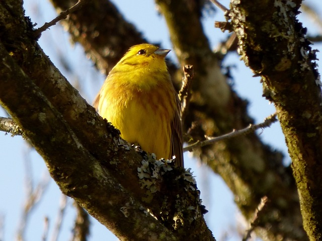

Birds of conservation concern in Ireland
There are a number of birds in Ireland whose numbers are in decilne. Some of those with a high priority for conservation are:
Barn Owl
The barn owl is the most common owl and is found in most parts of the world. it has seen a huge deciline in Ireland and Europe in recent years.

Curlew
The curlew is recognisable by its long curved bill.

Curlews use their long bills to search for worms in mud or very soft ground.

Yellowhammer
The yellowhammer is a large bunting with a yellow head and a streaked brown back. It usually lives in dry, open countryside with some trees or hedges.
Lapwing
The lapwing is black and white with a wispy crest.
It is a wader which means you can see it in wetland areas.

Other birds
Some birds are also listed as being of medium conservation concern.
- Hen Harrier
- Puffin
- Kestrel
- House Sparrow
- Kingfisher